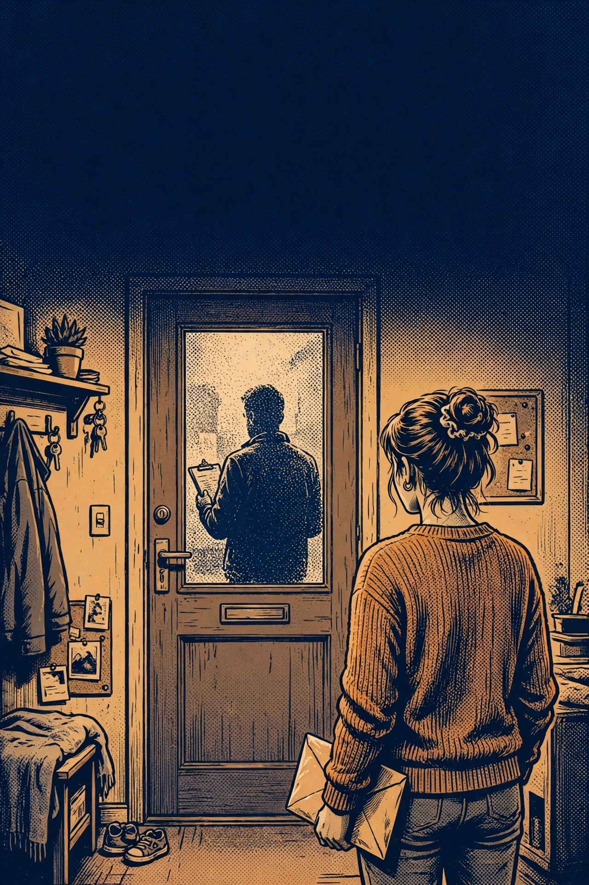

FOUNDATION
Scenario 5 — The Missed Appointment
A bus transfer kills a drug-screen appointment — call ahead and document, or be recorded as a no-show.

TACTIC WATCH · SCENARIO LIBRARY · EXPANDED EDITION
Scenario Library
One hundred thirty-six role-playing scenarios of what the child welfare system puts a parent through — built from the published court record and documented patterns, composited so no real family is recognizable. The original thirty-six, plus one hundred new scenarios.
Fictional composite stories — no real family's case. Prototype — pending attorney verification. General information, not legal advice.
Content warning: these stories involve investigations, court hearings, and children being removed.
Every scenario has a Quick Exit, and every comic edition has a Watch Mode — it plays itself with random choices, so a room can watch without anyone playing.
Start here. One pathway, one clock, one skill at a time — the folder, the letter, the phone call made before the deadline instead of after it.
A bus transfer kills a drug-screen appointment — call ahead and document, or be recorded as a no-show.
A referral went to your old address — get your records, correct it in writing, and verify the fix downstream.
A truancy warning after a bus-route change and asthma appointments — answer in writing, with proof, by the date.
Your child is already placed; visits are the case now — prepare for the hour, and write the day down the day it happens.
A voluntary safety plan sends your son to a neighbor "for the weekend" — with no end date written. Get dates before the first night.
Your housing referral is stalled because one form transposed two digits of your case ID — find it in your own copy and fix it in writing.
Meetings and forms arrive in English; you read Spanish at full speed — ask, in writing, for interpretation and translated papers.
A coach reports a bruise from a soccer fall — answer it with the pediatrician's chart, already dated before the report.
A worker's card in the door and one unexplained Tuesday — the first phone call, made on paper, decides the file's first draft.
Your ten-year-old was interviewed at school before you knew a report existed — her exact words, written down the same night, are the spine.
A letter with a case number and a response window — the envelope, the postmark, and a written answer turn a report into a closed file.
You are Renata. Your sitter canceled, your shift did not, and your seven-year-old was home alone for part of one evening. Tonight a caseworker is deciding where Ines sleeps — and whether the first name the file ever holds is your sister's.
You are Gwen. Your son Hugo, nine, has been in a foster home for two weeks while you finish a treatment program. Your father has a spare room, a steady pension, and a heart condition he manages like a train schedule. Between his offer and Hugo's bed in that room stands a home study — and everything a study can get wrong on paper.
A court-ordered parenting referral is never sent — five weeks vanish, and the progress note calls her ‘not yet engaged.’
Random screens by text, a site across town, a shift at 8:30 — a missed screen is tallied like a positive unless the conflict is on paper first.
Visits move across the county — two buses, ninety minutes, twenty minutes late — and the note records only that he was late.
An overnight-shift mother learns the courtroom's central lesson in one case: the agency has to prove it — and proof lives on paper.
A delivery driver, a daughter taken on a Monday evening, and an appointed lawyer with forty cases and ten minutes — what she knows on Wednesday is exactly what he hands her.
Foster care month fifteen is coming for a mother who has done everything except get a house — the lesson is that an exception only exists if it is documented.
The Bureau upheld the indicated report — but the order that says so carries two short clocks of its own, and a piece of evidence arrived too late for the first hearing.
The court has ruled and Tomek is placed with his aunt. The order is appealable — for exactly thirty days. A working father, a busy lawyer, and the plainest clock in the system.
A father serving a short sentence works his case plan entirely on paper that has to travel — and learns his file records 'no progress' for work it never saw.
A Deaf mother's meetings happen with no interpreter booked and a safety plan she cannot read — the case turns on whether her written requests become the record before the scored form does.
Three weeks after her daughter’s kinship placement, a mother’s benefits card declines — the closure notice went to the address she had already moved from, and only one of the two systems ever got the new one.
A childcare renewal form is mailed to the daycare instead of to her — the arrangement lapses, two Tuesday parenting classes are missed, and the file tallies them as hers.
You are Gina. The water was shut off on a Friday, you worked the weekend anyway, and on Monday the county took Nolan, nine, into care. He is sleeping at your sister Odessa's — safe, loved, and one school district too far away.
A capstone in scope, gentle in mechanics: one incident makes two files — an indicated report with a 90-day appeal clock, and a kinship placement with your sister — and the win is learning to work both files in the right order.
Two pressures at once: a job against a service plan, two counties, two systems, siblings in two homes. The record has to be built while life is happening.
A report after a custody argument, a knock at the door, and an assessment that rates what she cannot see — the 72-hour clock scenario.
An indicated report puts a preschool aide’s job on a 90-day clock — appeal it, prove it, or live with the letter.
A grandmother, a 28-year-old conviction, and the distance between the agency’s checklist and the court’s authority.
Siblings in two placements, two workers, two calendars — one written request that forces coordination onto the record.
Every service is scheduled inside a night-shift mother's sleep — an employer letter and a written amendment request, or quit the job, with neither path free.
The ordered treatment has a six-week waitlist — building the record that proves the delay belongs to the system, not to her.
A survivor is alleged to have 'failed to protect' while the other parent is the danger — separating her record from his, in writing, without graphic detail.
A mid-case move for housing, a file that takes a month to cross the county line, and clocks that don't pause — carrying her own copies so the case doesn't restart from zero.
Reunification is approved in principle — but the new apartment fails inspection on four fixable items, and a landlord's 30-day lease hold, not any statute, sets the clock for the paper trail that decides it.
A father notified late in his daughter's case has six weeks to show up on paper — while her mother documents the stability any change must protect.
A parent juggling a dependency case and a separate probation office's reporting schedule learns the scenario's one skill: one calendar, written notice to both offices, and saved confirmations — before two 10 a.m. appointments collide.
A daycare worker and mother in an open dependency case gets an indicated report from a relative's child's fall — and must run a 90-day CPSL appeal clock and a June dependency review on two separate records at once.
At month eight, one screen is reported positive during trial-home time — what the next 48 hours put on paper decides where Sam sleeps.
Two workers, two versions of one Saturday-evening agreement — the mother's own written confirmation decides which version the file keeps.
A toddler's fracture and two medical readings that don't match — the whole medical record, assembled by the parent, decides whether the report stands.
Two reports in one week, two workers, two files — answer each on its own paper, or watch them merge into one worse story.
A night-shift father's nap, a kettle boiled dry, and a drug screen his prescription will fail — the prescriber's letter must exist in the file before the result does.
You are Deshawn. A furnace fire took your apartment, not your children — but the shelter system took them anyway, into two different foster homes, because no single home that night had two beds. Your great-aunt Odette has a house, two spare rooms, and one complication: a grandson who stays some weekends, about whom everything must be written down exactly right.
You are Talia. Your son Ruben, eleven, has lived for six months with a foster mother he calls Tía, in his own school district, three bus stops from your apartment. Tonight at visitation he tells you he is moving — new home, new school, new county. You are hearing it from an eleven-year-old. The agency has not told you at all.
You are Francine, and this time the player is the kin. Your nephew Benny, eight, is in foster care while your sister Silvia is in treatment. Your own kinship study came back denied — two reasons, both about your house. One of them is wrong. The other is a misunderstanding with a tape measure. You are not a party to Benny's case. You are about to learn what a non-party can still do.
You are Noelle. Your daughter Sanaa, thirteen, has lived eight months with the Kellermans, a foster family who are good at teenagers. Tonight they tape their thirty-day notice to their own fridge: a parent's illness, a house to sell, an ending they hate. The agency's plan for a thirteen-year-old on a deadline is the plan agencies keep for teenagers nobody claims: a group placement. Sanaa's uncle Hakim would claim her in a heartbeat. The file says he was 'contacted.' He says his phone never rang.
Eight months in, the caseworker changes — and the new worker meets a summary with two stale lines, not the mother who lived the case.
Step A must finish before Step B will enroll her — but the referral for A expires while its waitlist is still running.
The visit notes are the case's memory — and two entries in them are quietly becoming findings.
The center cancels three visits; the report calls it her attendance — building the arithmetic that corrects the record.
Three days before adjudication, a mother learns that the agency must prove its case, that her lawyer can impeach a date from the agency's own notes, and that on cross-examination the most powerful answer is the one that stops.
A dependency petition built on a school nurse's written report — whose maker is not on the witness list — meets adjudication, where the agency must prove its case with evidence the court can weigh.
The agency asks to continue tomorrow's adjudication hearing for four weeks; whether those weeks become a dismissal, a bargain with teeth, or a month of drift turns on what is on the record today.
A permanency report calls a mother's compliance 'minimal' — her folder says 22 of 24, a finished course, and 24 of 26 visits — and fifteen days to turn numbers into findings.
The plan promised a service that never happened; at fifteen months the empty referral box — not the father — is the fact the record has to answer.
A willing aunt, an unassigned study, and a fifteen-month date: the relative-placement exception has to be made true on paper before the clock arrives.
Concurrent planning in the open: the agency builds an adoption track beside the reunification track, and the father's record is what keeps one goal from quietly replacing the other.
The goal was changed to adoption in a hearing where the court adopted the agency's report 'in full' — and made none of the findings the law lists. An appeal about what a panel can, and cannot, see.
The appeal was won: the Superior Court vacated the disposition and sent the case back. Now comes the part nobody celebrates — the new hearing, where a vacated order buys a second chance and nothing else.
The goal has already been changed to 'another planned permanent living arrangement' for a fourteen-year-old. Post-permanency, a mother, a teenager with opinions, and one more hearing at which the determinations still have to be made.
Solana has lived with her grandmother for eight months. The agency wants to move her to a licensed foster home. Her grandmother has a statutory right to be heard at the hearing — and no standing to do anything else. This is how much that right can carry.
A mother is scored for 'exposure' and 'failure to protect' after police respond to her home — while the plan's conditions require her to control the man whose conduct created the risk. Winning means getting her documented protective actions, and his name, into the right columns of the file.
A newborn's case opens on a hospital report, and a scored form reads the mother's prescribed treatment medication as the story — while her documented year of treatment sits in a clinic file across town. Winning means making the record travel, and correcting the word it was filed under.
A seventeen-year-old in foster care gives birth, and two files — hers as a child, her daughter's as a mother — separate them by default paperwork until she writes the joint question into both.
Six weeks after Emeka's placement, his benefit payment kept arriving to his mother as payee — then a repayment letter and a five-word case note reframed an administrative lag as retention.
At month nine a landlord's non-renewal moves Charise into her cousin's spare room — signed, receipted, applied from — while the plan's housing line still reads 'unstable housing.'
An old fines-and-costs plan lapses on two processor-late postings; a clerk's letter, a missed Saturday visit, and a six-word note turn a ledger's lag into a father's record — unless the receipts are filed in both files.
You are Darnell. Your son Khalil, eleven, has been in foster care four months, and his new school reads his frustration as defiance. You have asked twice, out loud, for him to be evaluated. Out loud is where requests go to disappear.
You are Kavita Raman. Your daughter Navya, six, is in foster care while you recover and rebuild. She needs dental surgery under anesthesia — and the consent form for it was sent to everyone except you.
You are Maureen Brackett. Your daughter Siobhan, fourteen, has been in foster care five months. At today's visit she is quiet in a way that is new — and she tells you, in a level voice, that 'the pills changed again.'
A father fights on two fronts in the same month: a Bureau appeal of an indicated report, where the agency must hand over its investigation evidence, and dependency reviews where his daughter sits with her grandmother. Win one file and the other gets easier; ignore either and both harden.
A mother whose son entered care as an infant plays a full year of services, visits, and reviews — and discovers that the folder she keeps, page by dated page, is the argument that brings him home at the month-thirteen review.
Mid-case, a job moves the family across a county line — and the case must follow without losing a single page. Two children, two clocks, one exception packet in transit: the win is a transfer where the file arrives whole and the new court starts from your record, not from zero.
Parallel tracks and parallel clocks. Endings open and close on what got written down months earlier. These are the full cases.
Month 13 of placement: services nearly complete, housing the last condition, and ASFA’s three exceptions in play.
At the ASFA fifteen-month date, twins whose readiness has split force a child-by-child fight over the record — one thriving toward home, one mid-treatment.
A newborn is not discharged after a birth-day concern while her older sister is safe at their grandmother's — three tracks, two children, one first week of paper.
An appeal told in flashback: what was objected to, offered, and said below decides what can be argued above — while the case below never pauses.
Two experts read one fracture two ways: building the complete medical record and care timeline — not charm — decides the hearing, while an indicated-report clock runs beside it.
A father learns of his children's case by mail from inside — every move he has is paper, while the mother's track and the 15-month clock run beside his.
A willing aunt in another state, a child in stranger foster care, and a placement that can die of silence between two filing systems.
A placed child changes schools, his education file scatters across five hands, and one binder has to teach two systems to read the same child before June.
A 15-year-old refuses her placement and services in her own words; her mother learns what a parent can still put on the record when the plan's subject won't cooperate.
A low-level new report lands on a family with two closed cases and a completed voluntary period; the parent learns to separate THEN from NOW in writing — before history is read as the present.
A parent's records request returns a redacted stack with the scored assessment pages missing entirely — and the fight for the file becomes the case.
In a pilot county, a parent works the full challenge to a scored assessment she has never seen — request, worksheet, rater question — and measures the win by what gets onto the record.
Eleven months in, the agency moves to change the goal while you are still finishing the plan — run Track A in the open while Track B is built, and make the two timelines meet on the record.
Three caseworkers in twelve months lose a referral, a completion, and a season of visits — your own folder is the only continuous record in the case.
Month 9 of placement: hearings slide for reasonable reasons while the ASFA 15-month date (June 10, 2026) does not — a chronology-and-readiness scenario about making delay visible in the record.
CAPSTONE — composite endings, not single outcomes: three children diverge (two with their grandmother, the oldest across town) while a 90-day CPSL appeal clock and the ASFA 15-of-22 clock run at once; each ending is a composite state across all three children and all three clocks.
A broken latch, a hallway, a removal at night — then thirty days in which the record, the kinship door, and a scored assessment decide whether the children come home at adjudication.
A daycare provider's indicated report rests on 'inconsistent statements' — hers never changed; the file's did, when one worker's notes became another's. The appeal evidence demand is how the truth gets subpoenaed from her own file.
You are Cyrus. Your three children have been in care since February 2nd of last year — Selah, twelve, in one foster home; Rafi, nine, and Nina, five, in another, forty minutes apart. Your mother Esther said in March she could take Nina. Only Nina. On May 2nd your children reach fifteen months in care, and the law's permanency clock strikes. This scenario is about what gets built before it does.
You are Veronica. Your son Otto, six, has been placed for four months, and the agency now recommends moving him to a 'higher level of care' home across the county — based on a scored assessment you have never seen, whose central item contradicts the visit logs you have. Your father's name is Salvatore. He has been at every visit. The assessment has never heard of him. This scenario is about making the court decide on the whole record.
You are Imani. Your daughter Zola, eight, was moved across the county line last Thursday — a foster home emergency, the agency says, and no beds in your county. Your sister Beatrice, in your county, was identified as kin at intake in February. The file says a packet was mailed to her. Beatrice says nothing ever came, and Beatrice keeps everything. One of them is wrong, and the proof is in a record you have the right to read.
You are Katya, in your fifth month of recovery. Your son Lev, four, is in foster care, and two paper walls stand between him and his uncle Gregory's home. The first is yours: an indicated report from the day Lev fell at the park — with a ninety-day appeal clock already running. The second is Gregory's: his kinship study is stalled by a record that belongs to a different man with his name. Two files, two corrections, one winter.
Month 10 of Amara's placement: the 15-month filing date is February 3, 2027 — and the services exception exists only as far as the file documents it.
Two separated parents, two case plans, two workers, one car — and two files that keep bleeding into each other.
Week 10 of 12 in IOP, Hector is discharged by arithmetic — a benefit cap — and the agency's system codes it 'goal not completed.'
A real adjudication trial: the agency must prove its case clearly and convincingly over two December days — and everything that decides it is built, or lost, in November.
At month ten, the agency asks the court to change Quinn's permanency goal from reunification to adoption — and his mother has nine days to turn eight months of real progress into evidence the court can act on.
At a permanency review, the agency's case rests on one psychologist's word — 'attenuated' — and Vernon's answer is built the way all answers in this system are built: out of paper, requested early and read closely.
At month fourteen, with the fifteen-month date five weeks away, Miriam Brandt must turn two unsent referrals, a filed exception packet, and a grandmother's approved study into documented § 6351(f)(9) findings — in the last fifteen minutes of the hearing.
A near-complete case managed month by month against the federal clock: every letter, log, and dated request either becomes part of an exception packet or evaporates.
The petition exists as a draft before the hearing does. The defense is built the only way it can be: the agency's own record, requested, read, and answered date by date.
Siblings placed apart run on the same federal clock but toward different doors — kinship for one, a documented compelling reason for the other — and the plan has to hold both.
Everything in the case is done except the sentence the statute actually asks for. A father learns that "documented in the case plan" is a place, a page, and a deadline.
The services exception argued from the agency's own paper: three referrals, three handoffs, three empty boxes — and a mother whose folder is the only continuous record in the case.
The capstone of the clock batch: exceptions argued child by child, a goal defended, a petition draft answered — every date computed, every claim on paper.
The court gave the twins to their grandmother. The agency is appealing. The mother's own appeal — a cross-appeal — runs on a fourteen-day clock nobody mentioned in the courtroom.
Pearl has lived with her aunt for twenty-two of her forty-eight months. The aunt now seeks permanent legal custodianship. Her father — stable for eight months, late to stability by two years — must decide what to fight for, and what fighting costs.
Cyril has been home for four months — on conditions, under supervision, in a case that is still open. The last hearing can close it. Between here and there: two course sessions, an unsigned plan, a file with errors in it, and one loud week.
The court has terminated Beatrix's parental rights. The decree is appealable for thirty days. An adoption petition is already being prepared. Two preserved issues, one clock, and a grandmother's house where a seven-year-old still has a bedroom.
A deployed father's return is five months away when a car accident hospitalizes his wife and opens a case — and the family's real care, by phone and by an aunt's kitchen table, must be written into a file that mails its letters to an empty house.
After an eviction, a mother pays week to week for a motel room while a scored form records poverty itself as risk — and the case turns on whether the file learns the difference between conditions and conduct in time.
A mother serving a sentence past the fifteen-month date, a daughter living with her grandmother from day one, and a case that turns on whether paper can travel between an institution's file and an agency's file before the federal clock strikes.
A father with a brain injury is handed a plan written for a man who does not fade by afternoon — until dated letters, a requested record, and a filed correction refit the plan to the man who must complete it.
A mother's dependency case is scored on another adult's conduct in another courtroom — until a challenge, a record request, and a correction separate the files, and an exception packet is filed ahead of the fifteen-month date.
A kinship grandmother's approval packet sits unsigned for months; her drained savings are then read as a stability risk — until the chronology is put on the record.
Month 13: every goal complete but housing — and housing waits on a return date the agency won't set until housing exists, while the 15-month date walks toward both.
Twelve weeks of Booker's compliance have a price the file never records — until his notebook, the sign-in sheets, and the screen log are put side by side against a summary that calls him ‘inconsistent.’
Three letters from three systems went to three wrong places after Shana's correctly filed address update — and the file recorded her silence at all three as failure to respond, and failure to attend.
Month 14 of Leona's placement: one summary phrase — ‘unresolved financial instability’ — built from three money entries, each documented wrong or lagging in the file's own paper, stalls a case that was moving toward home.
You are Reginald Bly. Your daughter Alina, twelve, is placed with her grandmother two districts away. A letter has just informed you that her school was decided last Tuesday — at a best-interest meeting you were never told about, in a process you have never heard of.
You are Bernadette Farrow. The dependency petition says your son Oren, ten, missed 23 days of school unexcused — educational neglect, in the agency's words. You count nine. Between your number and theirs stands a school office, a software migration, and a box of un-scanned excuse notes.
You are Dalila Haddad. Your daughter Yasmin, fifteen, is in a residential placement, and her school has decided she needs an evaluation. The district has also decided — from a file with your address wrong — that you cannot be located, and that a stranger should be appointed to sit in your chair.
You are Heather Valladolid. Your son Callum, eight, has been in foster care seven months; your trauma therapy is the spine of your case plan. The agency's new report quotes two lines from your treatment records to argue you are stalled. The lines are real. The page they were cut from says something else.
You are Bianca Torres. Your son Mateo, nine months old, was admitted Friday with bruises a baby his age should not be able to earn. The hospital chart that will decide two cases is 214 pages long. The agency's case rests on a two-page summary of it — and the summary never quotes page nine.
You are Shirley Trejo. Your daughter Destiny, sixteen, is being moved to a new foster home in two weeks. She has three demands — her school, her classes, and an answer about her medication — and one discovery: in the agency's reports, everything she says is being paraphrased. 'Some reluctance' is about to meet the girl who actually said it.
Two children entered care on two different dates; a third file — an indicated report against the mother — runs beside both. Three clocks, three buildings, one folder: sequence the appeal before its window closes, document the exceptions child by child, and arrive at the fifteen-month table with every file answered.
Fourteen months of record-building converge on a single permanency hearing: a father whose daughter entered care as a toddler asks the court to do in one morning what the file has been saying for a year. Every earlier scenario's skill appears exactly once — and the hearing uses all of them.
A grandmother approved as kinship caregiver, a mother in services, and an indicated-report appeal — three chairs at one table, three different legal postures, one boy. The win requires all three chairs to pull at once: the grandmother's study, the mother's record, and the appeal filed before its window closes.
An indicated report from a workplace-adjacent incident runs beside the dependency case of the man's daughter. Two proceedings, two burdens, two buildings — and a superintendent's logbook with two phone calls in it that the summary never mentions.
Three children enter care in a single September — two on the first, a third four weeks later — and the case runs the full wheel of the year: four seasons of services, reviews, and documentation, ending at a permanency hearing where the question is whether the goal itself survives.
The library's hardest scenario: three children on two clocks, an indicated appeal, a cross-county kinship placement, and a services plan with a vendor-shaped hole — a fifteen-month marathon in which every discipline from every earlier scenario is required at once, in the right order.